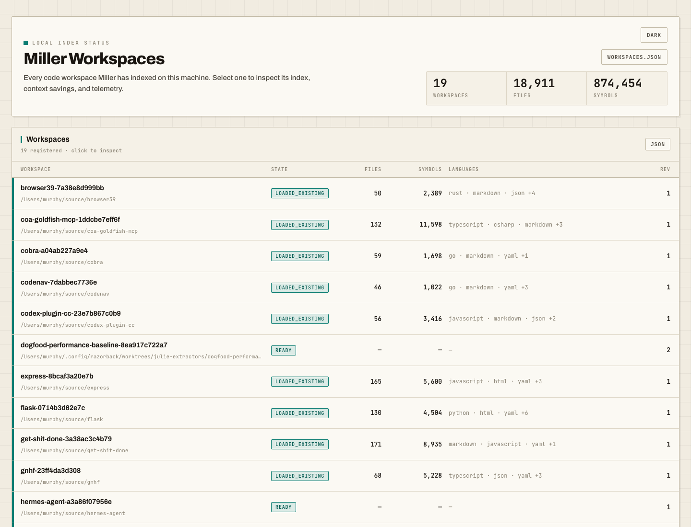

Systems and compiled
- Rust
.rs - C
.c.h - C++
.cpp.cc.cxx.c++.hpp.hh.hxx.h++ - Go
.go - Zig
.zig - Swift
.swift - Java
.java - Kotlin
.kt.kts - Scala
.scala.sc - C#
.cs - VB.NET
.vb - Dart
.dart
Free local code intelligence for coding agents
In a paired benchmark, replicated on v1.22.1, the same agent got 2.2× more tasks right with Miller than with grep and file reads. It gives agents exact references, call paths, rename proof, and token-budgeted context from a local SQLite index that stays current while you work.
What it is
Miller consumes julie-extract SQLite artifacts and exposes deterministic local read paths
through MCP and a matching CLI. It is local-first and runs without a daemon. Semantic retrieval is
on by default and fully local; you can switch it off, and doing so never changes lexical output.
julie-extractors owns the extraction: a hand-written parser-backed extractor for each
of 38 languages, held to one quality bar, which is how the index gets framework routes, DI graph
edges, cross-file linkage, and typed structural facts that query-file tools miss. Miller is the
agent-tool layer on top: search, inspect, context, refs, trace, impact, editing, and
deterministic repo-quality reports like metrics risk and miller report.
Measured context savings
| Repo | Language | File | Savings |
|---|---|---|---|
| Flask | Python | src/flask/app.py |
97.4% |
| Express | JavaScript | lib/application.js |
90.5% |
| Zod | TypeScript | packages/zod/src/v4/classic/schemas.ts |
98.2% |
| Newtonsoft.Json | C# | Src/Newtonsoft.Json/JsonConvert.cs |
97.1% |
| Gson | Java | gson/src/main/java/com/google/gson/Gson.java |
97.2% |
| jq | C | src/jv_parse.c |
95.7% |
Evidence and commands are recorded in the current measurement note.
Local proof commands
38 languages, one quality bar
Most tree-sitter tools drive extraction with query files, which caps how much a language can express. Miller's extraction layer is imperative code per language. TypeScript, Python, Rust, Go, Java, C, C++, Ruby, PHP, Swift, Kotlin, and the rest all get the same treatment: symbols with real signatures and doc comments, reference sites, relationships, complexity metrics, and typed structural facts.
That depth shows up in places query files can't reach. Route facts cover Express, FastAPI, Flask, Django, Rails, Spring, Next.js, Nuxt, Vue, React, and about 25 framework families in total. SQL DDL/DML statements become shape facts. C# dependency-injection registrations become real graph edges, and partial classes are linked across files. Where the ecosystem lacked a usable grammar (Razor, T-SQL, C#), the project maintains its own forks. If your stack is unusual, that's exactly where the hand-written approach pays off. The full argument is on the extraction layer's own site: hand-written extractors, not query files.
.rs.c .h.cpp .cc .cxx .c++ .hpp
.hh .hxx .h++.go.zig.swift.java.kt .kts.scala .sc.cs.vb.dart.py .pyi .pyw.rb .rbw.php .phtml.ex .exs.lua.r.sh .bash.ps1 .psm1 .psd1.gd.ts .mts .cts.tsx.js .mjs .cjs.jsx.vue.html .htm.css.razor .cshtml.qml.sql.json .jsonl .jsonc.yml .yaml.toml.md .markdown.regex
Depth follows the format: programming languages get symbols, signatures, doc comments, identifiers,
relationships, types, complexity metrics, and structural facts, while JSON, YAML, TOML, and Markdown
get document structure rather than type or reference resolution. The catalog for any install is
.tools/julie-extract languages --json, and miller workspace health shows
which of these actually appear in your workspace.
Tool surface
Symbol search by name and signature. Docs and prose stay in mode=content; comments and literals stay explicit with regions=.
File and symbol views. Use depth=overview for the first symbol read, then depth=full only when complete bodies or relation lists are needed.
A token-budgeted bundle for orienting on a task or module before editing.
Name-based references, dependency paths, and provider-scoped dotnet-web/nextjs/nextjs-api/nuxt/nuxt-api/vue/react/backend-http bridge evidence, with honest fallback guidance when a path or bridge is missing.
Reverse reachability and likely tests so agents can choose focused verification.
Preview-first, index-aware text and symbol edits with stale-target checks. Localized replace_text can use query, anchor, or line selectors to avoid full-file reads and show match proof before apply.
The plugin includes handoff-out and handoff-in skills for moving active work between Codex, Cursor, Claude, and other harnesses. Packets are local markdown under .miller/handoffs/ and use existing Miller tools rather than a new MCP or CLI surface.
mode=markers gives bounded TODO/FIXME/HACK/XXX/RAZORBACK audits over comment and doc-comment source regions.
Bounded search/read/export for source text, docs, logs, reports, and imported web markdown. Search hits carry source_id; empty searches and read errors include recovery guidance.
List and search extractor-recognized code-shape facts such as ASP.NET minimal API routes, htmx attributes, and Alpine directives by pattern_id or free-text query, plus metadata, path, and language without raw AST queries. List and no-match output gives concrete next actions.
Registry, freshness, refresh, telemetry-derived onboarding, dashboard launch, and cross-workspace selectors.
Opt-in continuous testing: impact-selected runs, watermark freshness, and honest verdicts. status is a cheap read that starts nothing; start is the only spawn.
Continuous testing
Miller can watch a workspace and keep test verdicts as current as the index. The unit of freshness is a test case, not a run: every result is stamped with the index generation and revision it was proved at. When a file changes, green cases the change cannot reach carry their verdict forward, and only the impacted cases go stale. A run then executes that stale set as an explicit test-ID list, so a one-line edit runs the tests that edit can break instead of the whole suite.
An explicit tests run also retries every red case, because asking for a run
means prove it again. Automatic runs debounce on the trailing edge. Green means complete
results at the current index key: when impact data is truncated, degraded, or unavailable,
Miller marks everything stale and runs nothing. There is no whole-suite fallback and no
optimistic green.
dotnetxunitnunitmstestcargopytestvitestjestnode-testqt-quick-testgogradlemavensbtrspecphpunitpestgut
Run on real repositories: .NET on Miller's own suite, cargo on
julie-extractors (4,173 cases), pytest on more-itertools
(736 tests), jest on vercel/ms, plus vitest and
node-test on live JavaScript projects. qt-quick-test shipped in
v1.22.0 and is proven by fixtures, not yet on a real Qt repository.
The JVM, Ruby, PHP, and GDScript providers have bounded runner floors and refusal paths;
see the full continuous-testing guide.
JavaScript and Python cases are discovered by test-file naming
(*.test.* or *.spec.*, test_*.py or
*_test.py), so a suite named some other way reports no cases rather than a false
green.
miller tests enable # discover test projects, opt this workspace in
miller tests serve # start the daemon: the only start path
miller tests status # verdict, stale count, daemon state
miller tests failures # the red cases with failure summaries
miller tests run # the stale set plus every red case
miller tests stopMILLER_CT=off is a
permanent zero-work switch.tests status is a cheap read: it creates no files and never starts the
daemon. tests serve is the only start path.tests MCP tool. A linked git
worktree inherits the main checkout's opt-in and is adopted by one family daemon.Operational dashboard

Try it
/plugin marketplace add anortham/miller
/plugin install miller@millermiller serve to ~/.cursor/mcp.json. For a user-level GUI registration, call workspace operation=list; if absent, call workspace operation=open path=/absolute/project, then pass the returned workspace_id on every workspace-bound call.MILLER_SEMANTIC=off is a permanent zero-work guarantee, and lexical output stays byte-identical either way.